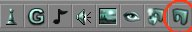
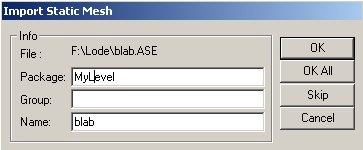
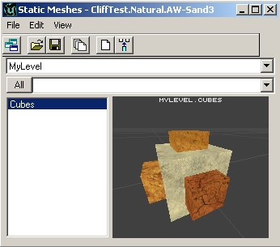
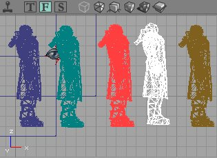
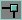
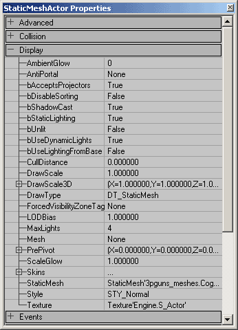
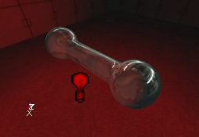

UDN
Search public documentation:
StaticMeshesTutorialKR
English Translation
日本語訳
Interested in the Unreal Engine?
Visit the Unreal Technology site.
Looking for jobs and company info?
Check out the Epic games site.
Questions about support via UDN?
Contact the UDN Staff
日本語訳
Interested in the Unreal Engine?
Visit the Unreal Technology site.
Looking for jobs and company info?
Check out the Epic games site.
Questions about support via UDN?
Contact the UDN Staff
StaticMeshes 튜토리얼
문서 요약: 정적 메쉬, 정적 메쉬 브라우저, 정적 메쉬 변환 및 속성 사용에 대한 가이드입니다. 초급 및 중급 스킬 레벨용으로써 유용합니다. 문서 변경 내역: 충돌 정보를 업데이트하기 위해 Chris Linder(DemiurgeStudios?) 가 최종 업데이트함. 원저자: Lode Vandevenne(UdnStaff)정적 메쉬/하드웨어 브러시란 무엇인가 ?
StaticMesh (이전에는 "하드웨어 브러시"라고 알려짐)는 그래픽 카드의 하드웨어에 의해 그려지는 다각형 세트입니다. 이것은 훨씬 더 빠르고, 더 다양한 다각형을 처리할 수 있으며, BSP 구멍에 취약하지 않고, 일반 브러시 또는 애니메이션화된 메쉬보다 더 좋게 보입니다. StaticMeshes 는 변경될 수 없는 메쉬로 그려지므로 비디오 메모리에 캐시화될 수 있다하여 그 이름을 얻게 되었습니다. 따라서 그 어느 때보다 뛰어난 성능을 제공합니다. 모든 종류의 브러시 및 애니메이션 메쉬를 정적 메쉬로 변환할 수 있으며, 모든 정적 메쉬를 브러시로 변환시킬 수 있습니다. 또한 *.ase 파일에서부터 정적 메쉬를 가져올 수 있습니다. 정적 메쉬는 텍스처, 사운드, 음악 등이 저장되는 동일한 방식으로 *.usx 파일로 패키지에 저장됩니다. 일반 브러시는 맵의 매우 기본적인 레이아웃, 불투명 세계에서 사물을 빼내기, 아주 멋진 조명, 또는 거울과 같은 특별한 표면, 모조 배경막, 표면 패닝의 경우에만 사용됩니다. 다른 모든 브러시, 특히 폴리곤이 많은 브러시는 정적 메쉬로 변환되야 합니다. 예를 들면, 맵 Mesas 는 대부분 StaticMeshes 로만 구성됩니다. 스크린샷에서는 일반 브러시의 8 개의 다각형만이 보인다는 것에 주의하십시오.
정적 메쉬 브라우저
Static Mesh 브라우저를 열려면 도구 모음 상단에 있는 Static Mesh Browser 버튼을 누릅니다.
그러면 Static Meshes 창이 나타납니다. 이 창은 패키지에 포함된 모든 정적 메쉬를 표시합니다. 이것은 Sound Browser 나 Texture Browser 등과 동일한 방식으로 작동합니다. 이것은 모든 정적 메쉬가 이 브라우저로부터 스킨을 사용하고, 만약 브라우저에서 스킨을 변경하면 변경된 스킨을 사용하는 모든 정적 메쉬도 또한 변경된 스킨을 사용한다는 것을 의미합니다. 다음은 스크린샷에 열거된 버튼과 파트의 의미하는 것입니다.
1. 이 목록에서 열린 패키지 중 하나를 선택할 수 있습니다.
2. 여기서는 어떤 그룹이 있는 경우 선택한 패키지안의 그룹을 선택할 수 있습니다. "All" 버튼을 누르면 모든 그룹이 동시에 표시됩니다.
3. 이 목록은 선택된 패키지 또는 그룹내의 모든 정적 메쉬를 나타냅니다.
4. 이것은 정적 메쉬를 볼 수 있는 미리보기 창입니다. 편집기의 3D View 에서 카메라를 이동하는 것과 같이 이 창에서 카메라를 이동시킬 수 있습니다.
5. 이 필드에서 충돌을 제어할 수 있을뿐만 아니라 정적 메쉬의 각 재질마다 텍스처를 전환시킬 수 있습니다. Vertex Colors (정점 색상), Simple Karma Collision (단순 Karma 충돌), Simple Box Collision (단순 상자 충돌), Simple Line Collision (단순 선 충돌)을 사용하여 온/오프를 토글 전환시킬 수 있습니다.
6. Toggle Dock Status 버튼을 누르면, Static Meshes 창이 도킹되거나 메인 브라우저 창에서 해제됩니다.
7. Open Package (패키지를 열기) 버튼은 하드 드라이브에서 정적 메쉬 패키지를 열게 하여줍니다. 정적 메쉬 패키지는 *.usx 파일 유형을 갖습니다.
8. Save Package (패키지 저장) 버튼을 통해 하드 디스크에서 선택한 패키지를 StaticMeshes 디렉터리에 저장할 수 있습니다. 새로운 패키지 또는 수정된 것을 만들었고 맵에서 그것의 일부 요소를 사용했을 경우 해당 패키지를 저장하는 것을 절대로 잊어버리지 마십시오. 그렇지 않으면 맵은 플레이할 수 없게 됩니다.
9. Load Entire Package (전체 패키지 로드하기) 버튼을 사용하여 하드 디스크에서 선택한 패키지의 모든 정적 메쉬를 로드합니다. 전체 정적 메쉬가 로드되지 않았으면 열은 맵이 일부만을 사용하기 때문입니다.
10. Create Static Mesh From Selection (선택에서 정적 메쉬 만들기) 버튼을 누르면 모든 선택된 브러시, 액터, 정적 메쉬는 새로운 정적 메쉬로 변환됩니다. 자세한 내용은 나중에 설명됩니다.
11. Insert Static Mesh into Level (정적 메쉬를 레벨에 삽입하기) 버튼을 누르면 선택된 정적 메쉬는 맵에 추가되고 카메라 위치에 스냅됩니다.
12. 메뉴 모음은 각 브라우저에 특정적입니다. 다음은 각 메뉴에서 찾은 모든 액션입니다.
이 창은 패키지에 포함된 모든 정적 메쉬를 표시합니다. 이것은 Sound Browser 나 Texture Browser 등과 동일한 방식으로 작동합니다. 이것은 모든 정적 메쉬가 이 브라우저로부터 스킨을 사용하고, 만약 브라우저에서 스킨을 변경하면 변경된 스킨을 사용하는 모든 정적 메쉬도 또한 변경된 스킨을 사용한다는 것을 의미합니다. 다음은 스크린샷에 열거된 버튼과 파트의 의미하는 것입니다.
1. 이 목록에서 열린 패키지 중 하나를 선택할 수 있습니다.
2. 여기서는 어떤 그룹이 있는 경우 선택한 패키지안의 그룹을 선택할 수 있습니다. "All" 버튼을 누르면 모든 그룹이 동시에 표시됩니다.
3. 이 목록은 선택된 패키지 또는 그룹내의 모든 정적 메쉬를 나타냅니다.
4. 이것은 정적 메쉬를 볼 수 있는 미리보기 창입니다. 편집기의 3D View 에서 카메라를 이동하는 것과 같이 이 창에서 카메라를 이동시킬 수 있습니다.
5. 이 필드에서 충돌을 제어할 수 있을뿐만 아니라 정적 메쉬의 각 재질마다 텍스처를 전환시킬 수 있습니다. Vertex Colors (정점 색상), Simple Karma Collision (단순 Karma 충돌), Simple Box Collision (단순 상자 충돌), Simple Line Collision (단순 선 충돌)을 사용하여 온/오프를 토글 전환시킬 수 있습니다.
6. Toggle Dock Status 버튼을 누르면, Static Meshes 창이 도킹되거나 메인 브라우저 창에서 해제됩니다.
7. Open Package (패키지를 열기) 버튼은 하드 드라이브에서 정적 메쉬 패키지를 열게 하여줍니다. 정적 메쉬 패키지는 *.usx 파일 유형을 갖습니다.
8. Save Package (패키지 저장) 버튼을 통해 하드 디스크에서 선택한 패키지를 StaticMeshes 디렉터리에 저장할 수 있습니다. 새로운 패키지 또는 수정된 것을 만들었고 맵에서 그것의 일부 요소를 사용했을 경우 해당 패키지를 저장하는 것을 절대로 잊어버리지 마십시오. 그렇지 않으면 맵은 플레이할 수 없게 됩니다.
9. Load Entire Package (전체 패키지 로드하기) 버튼을 사용하여 하드 디스크에서 선택한 패키지의 모든 정적 메쉬를 로드합니다. 전체 정적 메쉬가 로드되지 않았으면 열은 맵이 일부만을 사용하기 때문입니다.
10. Create Static Mesh From Selection (선택에서 정적 메쉬 만들기) 버튼을 누르면 모든 선택된 브러시, 액터, 정적 메쉬는 새로운 정적 메쉬로 변환됩니다. 자세한 내용은 나중에 설명됩니다.
11. Insert Static Mesh into Level (정적 메쉬를 레벨에 삽입하기) 버튼을 누르면 선택된 정적 메쉬는 맵에 추가되고 카메라 위치에 스냅됩니다.
12. 메뉴 모음은 각 브라우저에 특정적입니다. 다음은 각 메뉴에서 찾은 모든 액션입니다. - File (파일) - 여기에서 Static Mesh *.usx 파일ㅇ르 열고 저장할 수 있거나 *.ase 파일에서부터 정적 메쉬를 가져오기할 수 있습니다. 자세한 내용은 나중에 설명됩니다.
- Edit (편집) – 이것은 Delete (삭제), Rename (이름 변경), 또는 Load Entire Package (전체 패키지 로드하기)를 할 수 있게 하여줍니다. 또한 패키지를 레벨에 추가하거나 선택에서 패키지를 만들 수 있습니다. 이 메뉴 하단에서 다음 또는 이전 패키지로 이동할 수 있습니다.
- View (보기) – 미리 보기 창에 대한 여러 각기 다른 뷰 모드가 있습니다(#4).
- Show Collision (충돌 표시) - 이 메뉴는 충돌 외각에 밝은 핑크색의 와이어 프레임을 표시합니다.
- Karma Primitives - Karma 에 의해 사용되는 충돌 경계의 상징을 표시합니다. Karma 충돌 경계는 구, 실린더, 상자, 볼록면체(가장자리의 면이 아닌 정점으로만 저장됨)를 지원합니다. Karma 충돌 경계의 다른 색상은 충돌의 외각을 구성하는 다른 primitives 를 나타냅니다(적을 수록 좋음. 이상적으로 하나만 갖습니다). 총 충돌 Primitives 의 수는 미리보기 창 (# 4) 에서도 표시됩니다.
- Karma Mass Properties (Karma 질량 속성) – 이것은 객체의 질량을 정의하는 상자뿐만 아니라 큰 정점으로 표시되는 객체의 질량 중심을 나타냅니다.
- Collision Tools (충돌 도구) – 이러한 도구는 정적 메쉬에 대한 각기 다른 충돌 외각의 복합성을 생성할 수 있게 하여줍니다.
정적 메쉬 가져오기
*.ase 파일들을 정적 메쉬 브라우저로 가져오기할 수 있습니다. File 메뉴를 열고, Import ...를 선택한 다음 *.ase 파일을 검색하십시오. 그러면 Import Static Mesh Window 가 나타납니다.
Package 에서 새로운 정적 메쉬를 저장하려는 패키지의 이름을 입력하십시오. MyLevel 패키지를 사용하는 경우 정적 메쉬는 만들고 있는 (*.unr 파일) 맵 파일내에 저장됩니다. 다른 패키지 이름을 사용하려면 편집기를 종료하고 맵 테스트 전에 패키지를 저장하십시오. Group 에서 정적 메쉬가 포함될 그룹 이름을 입력하십시오. 아무것도 입력하지 않으면 어떤 그룹에도 들어가지 않습니다. Name 에서 패키지에 정적 메쉬가 갖길 원하는 이름을 입력하십시오. 하나 이상의 *.ase 파일을 브라우저 창에 선택한 경우 OK All 을 사용하여 패키지의 모든 파일을 자동으로 선택한 그룹으로 가져오기할 수 있습니다. 파일 이름은 원본 파일 이름과 동일합니다. MyLevel 이 아닌 패키지를 사용하려면 패키지를 저장해야 합니다.브러시 또는 애니메이션 메쉬를 정적 메쉬로 변환하기
정적 메쉬를 가져오기하는 대신에 브러시를 새로운 정적 메쉬롤 변환시킬 수 있습니다. 브러시를 정적 메쉬롤 변환시키려면 브러시를 마우스 오른쪽 버튼으로 클릭하여 Convert 를 확대하고 난 다음 To Static Mesh 를 선택하십시오. 또한 대신 정적 메쉬 브라우저에서 "Create Static Mesh From Selection" 버튼을 누를 수도 있습니다.
이 변환은 파랑, 노랑, 빨강, 또는 다른 어떤 색깔의 브러시에 상관 없이 작동합니다. 그러나 subtractive (노란색) 브러솔을 정적 메쉬롤 변환하는 경우 노란색 브러시가 파란색일 수 있었던 것처럼 해당 메쉬는 additive 입니다. "To Static Mesh," 를 누르면 새 정적 메쉬 창이 나타납니다. 이것은 정적 메쉬 가져오기 창과 정확히 같습니다. 패키지 및 메쉬의 이름을 다시 입력하십시오.
또한 대신 정적 메쉬 브라우저에서 "Create Static Mesh From Selection" 버튼을 누를 수도 있습니다.
이 변환은 파랑, 노랑, 빨강, 또는 다른 어떤 색깔의 브러시에 상관 없이 작동합니다. 그러나 subtractive (노란색) 브러솔을 정적 메쉬롤 변환하는 경우 노란색 브러시가 파란색일 수 있었던 것처럼 해당 메쉬는 additive 입니다. "To Static Mesh," 를 누르면 새 정적 메쉬 창이 나타납니다. 이것은 정적 메쉬 가져오기 창과 정확히 같습니다. 패키지 및 메쉬의 이름을 다시 입력하십시오.
 이제 브라우저에서 정적 메쉬를 보실 것입니다.
이제 브라우저에서 정적 메쉬를 보실 것입니다.

변환하기 전에 빨간색 선회축 지점이 브러시에 있는지 확인하십시오. 이 점이 정적 메쉬의 중심이기 때문입니다. 선회축 지점을 배치하려면 브러시의 정점 중 하나를 클릭하거나 그리드를 마우스 오른쪽 버튼으로 클릭하고 Pivot --> Place Pivot (Snapped) Here 를 선택하십시오. 여러 브러시를 선택하고 변환한 경우 선택한 모든 브러시는 1 개의 메시에 넣어집니다. 그러나 다른 additive 및 subtractive 브러쉬를 사용하여 도형을 만든 경우 먼저 전체를 하나의 브러시로 교차시킬 필요가 있습니다. 그렇지 않으면, 모든 subtractive 브러시가 additive 브러시로 되어 버립니다. 또한 일반 메쉬 또는 기타 다른 정적 메쉬를 1 개의 새로운 정적 메쉬로 변환시킬 수 있습니다.
또한 일반 메쉬 또는 기타 다른 정적 메쉬를 1 개의 새로운 정적 메쉬로 변환시킬 수 있습니다.
 브러시를 정적 메쉬로 변환시키는 경우 Unlit 및 Special Lit 과 같은 일부 표면 설정은 더 이상 작동하지 않습니다. 그러나 여전히 display 속성에서 Unlit 하는 Static Mesh 를 완성하도록 설정할 수 있습니다.
브러시를 정적 메쉬로 변환시키는 경우 Unlit 및 Special Lit 과 같은 일부 표면 설정은 더 이상 작동하지 않습니다. 그러나 여전히 display 속성에서 Unlit 하는 Static Mesh 를 완성하도록 설정할 수 있습니다.
정적 메쉬를 브러시로 변환시키기
정적 메쉬를 브러시로 변환시킬 수 있습니다. 정적 메쉬를 마우스 오른쪽 버튼으로 클릭하고 Convert 를 확장한 다음 To Brush 를 선택하십시오. 레벨의 BSP 구조에 추가하기 위해 정적 메쉬를 브러시롤 변환시키는 것은 절대 권장하지 않는다는 점을 유의해 주십시오. 주요 성능 저하뿐만 아니라 BSP 구멍, 조명 (BSP 다각형이 평평해짐. 정적 메쉬처럼 부드럽게 음영을 넣을 수 없음), 충돌 문제를 일으키게 됩니다. 여기 빨간색 브러시는 StaticMesh 와 동일한 모양을 갖습니다.
여기 빨간색 브러시는 StaticMesh 와 동일한 모양을 갖습니다.
 대부분의 경우 정적 메쉬 일부 표면의 텍스처를 변경하기 위해 정적 메쉬를 브러시로 변환해야 합니다. 정적 메쉬에서 직접 텍스처를 편집할 수 없습니다(앞으로 가능하게 될 것으로 기대합시다). 빈 공간에 브러시를 추가하고 텍스처를 편집한 후 브러시를 새로운 정적 메쉬로 변환시키거나 이전 정적 메쉬를 덮어쓰기할 수 있습니다. 이전 정적 메쉬(동일한 이름으로 같은 패키지에 넣습니다)를 덮어쓰기하는 경우 맵에서의 이러한 정적 메쉬들은 자동적으로 업데이트되어집니다.
기본적으로 모든 종류의 브러시를 다른 어떤 종류의 브러시로 변환시킬 수 있습니다. 아래의 스크린샷의 왼쪽에서 오른쪽으로 차례로 additive 브러시, 정적 메쉬, 빨간색 빌더 브러시, 뼈대 메쉬, subtractive 브러쉬입니다.
대부분의 경우 정적 메쉬 일부 표면의 텍스처를 변경하기 위해 정적 메쉬를 브러시로 변환해야 합니다. 정적 메쉬에서 직접 텍스처를 편집할 수 없습니다(앞으로 가능하게 될 것으로 기대합시다). 빈 공간에 브러시를 추가하고 텍스처를 편집한 후 브러시를 새로운 정적 메쉬로 변환시키거나 이전 정적 메쉬를 덮어쓰기할 수 있습니다. 이전 정적 메쉬(동일한 이름으로 같은 패키지에 넣습니다)를 덮어쓰기하는 경우 맵에서의 이러한 정적 메쉬들은 자동적으로 업데이트되어집니다.
기본적으로 모든 종류의 브러시를 다른 어떤 종류의 브러시로 변환시킬 수 있습니다. 아래의 스크린샷의 왼쪽에서 오른쪽으로 차례로 additive 브러시, 정적 메쉬, 빨간색 빌더 브러시, 뼈대 메쉬, subtractive 브러쉬입니다.

정적 메쉬 추가하기
정적 메쉬를 맵에 추가하려면 정적 메쉬 브라우저에서 하나를 선택한 다음 2 ㅇ 또는 3D 뷰에서 마우스 오른쪽 버튼으로 클릭한 다음 표시되는 메뉴에서 Add Static Mesh: ‘Package Name’ 을 선택하십시오.
 정적 메쉬를 추가한 후 다른 객체 또는 브러시를 회전시키거나 다른 위치로 배치시키는 것과 동일한 방식으로 이 정적 메쉬를 회전시키거나 다른 위치로 배치시킬 수 있습니다. 정적 메쉬의 정점 중 하나를 그리드에 스냅하려면 정적 메쉬를 선택했을 때 정점에 그려진 작은 흰색 사각형 위에 마우스 오른쪽 버튼을 클릭하면 됩니다(흰색 사각형이 없으면 Show Large Vertices button
정적 메쉬를 추가한 후 다른 객체 또는 브러시를 회전시키거나 다른 위치로 배치시키는 것과 동일한 방식으로 이 정적 메쉬를 회전시키거나 다른 위치로 배치시킬 수 있습니다. 정적 메쉬의 정점 중 하나를 그리드에 스냅하려면 정적 메쉬를 선택했을 때 정점에 그려진 작은 흰색 사각형 위에 마우스 오른쪽 버튼을 클릭하면 됩니다(흰색 사각형이 없으면 Show Large Vertices button 
버튼을 누르십시오). 정적 메쉬의 정점에 선회축 지점을 배치하려면 마우스 왼쪽 버튼으로 흰색 상자를 클릭하십시오.
정적 메쉬 속성
정적 메쉬를 마우스 오른쪽 버튼으로 클릭한 다음 StaticMeshActor Properties 를 선택하면 StaticMeshActor Properties 가 나타납니다. 그런 다음, Display 를 확장합니다.
bShadowCast: True 인 경우 정적 메쉬는 그림자를 투영하는 반면, False 인 경우 투영하지 않습니다.
 bUnlit: True 인 경우 정적 메쉬는 항상 밝은 반면, False 이면 Light Actors 또는 ZoneLight 에서 조명을 받아야 합니다.
bUnlit: True 인 경우 정적 메쉬는 항상 밝은 반면, False 이면 Light Actors 또는 ZoneLight 에서 조명을 받아야 합니다.


DrawScale: 정적 메쉬를 작게하거나 크게하는데 사용합니다. 1 이 기본 크기이고 2 는 2 배 크기입니다.
 DrawScale3D: X, Y 또는 Z 축을 따라 독립적으로 Draw 스케일을 변경시킬 수 있게 합니다.
DrawScale3D: X, Y 또는 Z 축을 따라 독립적으로 Draw 스케일을 변경시킬 수 있게 합니다.

 DrawType: 이 설정은 이 객체가 정적 메쉬이기 때문입니다. 이 옵션을 DT_StaticMesh 로 설정하면 StaticMesh 에서 선택한 StaticMesh 스킨이 사용됩니다. 그렇지 않은 경우는 무시됩니다. 이 설정을 DT_StaticMesh 로 설정하여 모든 객체, 심지어 Light Actors 또는 무기를 정적 메쉬로 변환시킬 수 있습니다.
Skins: 이것은 Skins Array 이어서 StaticMesh 를 인스턴스로 사용하면서 StaticMesh 에 할당된 텍스처를 덮어쓰기할 수 있습니다. Texture Browser 에서 원하는 텍스처를 선택하십시오. 그런 다음 StaticMesh 의 적절한 재질을 대체하기 위해 스킨을 필요한 만큼 추가합니다(Skin 0 은 Material 0 을 교체하고, Skin 1 은 Material 1 을 교체합니다, 등등). 그런 다음 텍스처를 대체하기 위해 Use 버튼을 누르면 StaticMesh 의 인스턴스에 텍스처를 지정합니다.
DrawType: 이 설정은 이 객체가 정적 메쉬이기 때문입니다. 이 옵션을 DT_StaticMesh 로 설정하면 StaticMesh 에서 선택한 StaticMesh 스킨이 사용됩니다. 그렇지 않은 경우는 무시됩니다. 이 설정을 DT_StaticMesh 로 설정하여 모든 객체, 심지어 Light Actors 또는 무기를 정적 메쉬로 변환시킬 수 있습니다.
Skins: 이것은 Skins Array 이어서 StaticMesh 를 인스턴스로 사용하면서 StaticMesh 에 할당된 텍스처를 덮어쓰기할 수 있습니다. Texture Browser 에서 원하는 텍스처를 선택하십시오. 그런 다음 StaticMesh 의 적절한 재질을 대체하기 위해 스킨을 필요한 만큼 추가합니다(Skin 0 은 Material 0 을 교체하고, Skin 1 은 Material 1 을 교체합니다, 등등). 그런 다음 텍스처를 대체하기 위해 Use 버튼을 누르면 StaticMesh 의 인스턴스에 텍스처를 지정합니다.
 StaticMesh: 이 옵션은 객체에 어떤 StaticMesh 스킨을 사용할 여부를 결정합니다. 정적 메쉬 브라우저에서 Static Mesh 를 선택하고 Use 버튼을 눌러 값을 입력할 수 있습니다.
Static Mesh Properties 에서 정적 메쉬에 조명을 주기 위해 다른 객체에 하는 방식과 동일하게 LightColor 및 Lighting 를 확장할 수 있습니다. 조명을 작동시키기 위하여 LightBrightness, LightRadius, LightType 을 설정해야 합니다. 또한, bShadowCast 의 값을 False 로 설정합니다. 그렇지 않으면, 정적 메쉬가 조명을 완전하게 음영을 줄 수 있으므로 조명 효과가 전혀 없게됩니다.
StaticMesh: 이 옵션은 객체에 어떤 StaticMesh 스킨을 사용할 여부를 결정합니다. 정적 메쉬 브라우저에서 Static Mesh 를 선택하고 Use 버튼을 눌러 값을 입력할 수 있습니다.
Static Mesh Properties 에서 정적 메쉬에 조명을 주기 위해 다른 객체에 하는 방식과 동일하게 LightColor 및 Lighting 를 확장할 수 있습니다. 조명을 작동시키기 위하여 LightBrightness, LightRadius, LightType 을 설정해야 합니다. 또한, bShadowCast 의 값을 False 로 설정합니다. 그렇지 않으면, 정적 메쉬가 조명을 완전하게 음영을 줄 수 있으므로 조명 효과가 전혀 없게됩니다.

 정적 메쉬 고유의 AmbientSound 를 부여할 수 있습니다. 속성에서 Sound 를 확장하고 Sound Browser 에서 사운드를 선택한 다음 AmbientSound 필드에서 Use 버튼을 눌러 주십시오. 또한 사운드에 음의 높이, 음역, 음량을 부여할 수 있습니다.
정적 메쉬 고유의 AmbientSound 를 부여할 수 있습니다. 속성에서 Sound 를 확장하고 Sound Browser 에서 사운드를 선택한 다음 AmbientSound 필드에서 Use 버튼을 눌러 주십시오. 또한 사운드에 음의 높이, 음역, 음량을 부여할 수 있습니다.